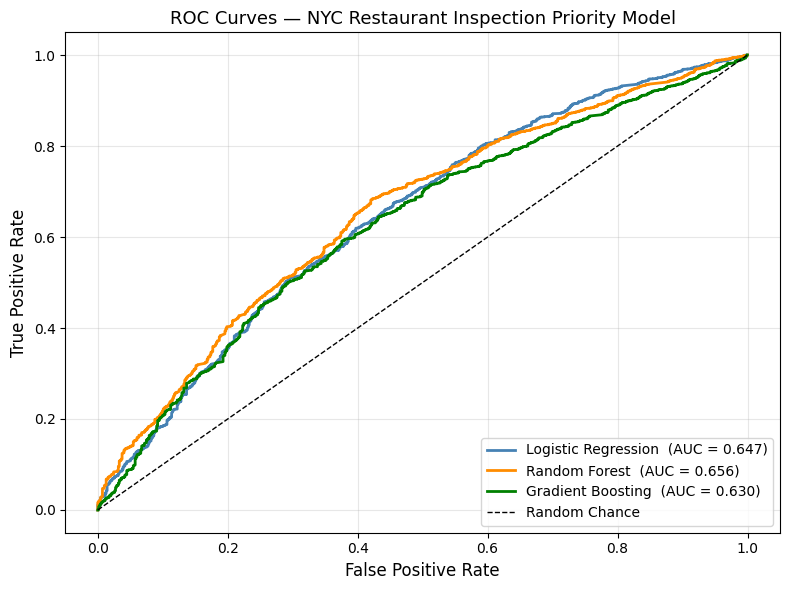
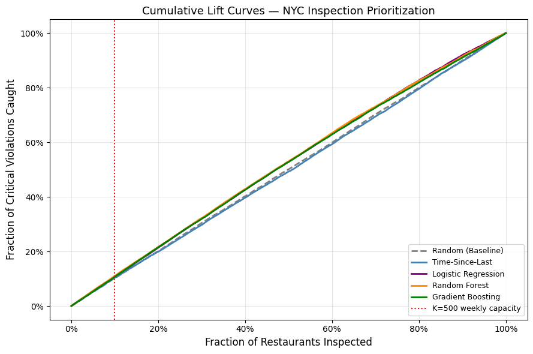
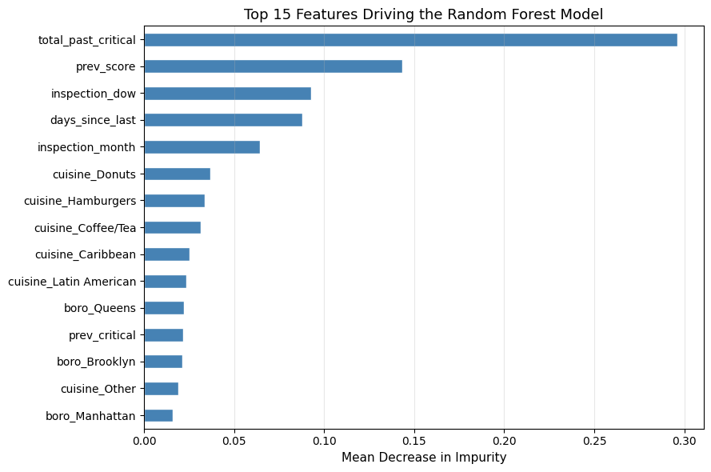
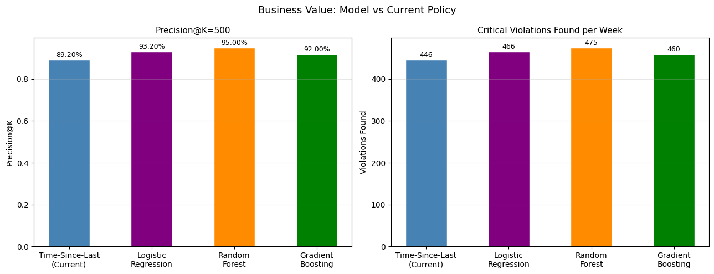
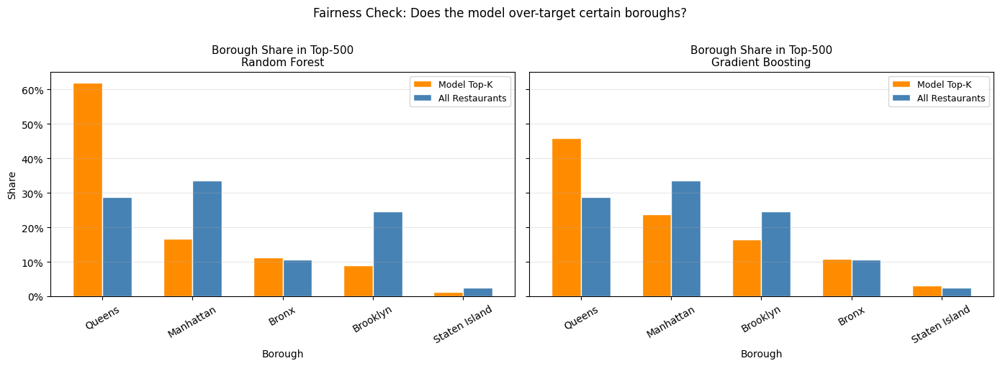

NYC's restaurant inspectors have 500 slots per week and 27,000 restaurants to cover. PlateRisk uses machine learning to rank establishments by predicted violation risk — so the worst offenders are inspected first.
NYC's Department of Health and Mental Hygiene (DOHMH) conducts approximately 100,000 restaurant inspections annually under a fixed weekly scheduling budget. The current heuristic — prioritizing establishments by time elapsed since their last inspection — incorporates no predictive risk signal. PlateRisk is a proof-of-concept decision support system that replaces this heuristic with a machine learning risk score derived from historical inspection records, cuisine type, borough, and temporal patterns.
With a fixed weekly inspection capacity of K≈500 and over 27,000 active establishments, DOHMH faces a resource allocation problem. The status quo time-based heuristic treats a low-risk diner that was last inspected 11 months ago identically to a high-violation-history restaurant inspected at the same time. PlateRisk addresses this gap by outputting a calibrated risk score per establishment, enabling analysts to concentrate scarce inspection resources where the probability of a critical violation is highest.
The primary stakeholder is a DOHMH inspection planning analyst. Each week, the analyst uses PlateRisk's ranked output to populate the weekly inspection queue — replacing ad hoc scheduling with a systematic, auditable, data-driven prioritization. Human discretion is retained at every stage: the model produces a ranked recommendation, not an automated enforcement decision. A secondary deployment pathway — licensing the risk score to restaurant operators as a pre-inspection compliance tool — is discussed in the Deployment section.
Weekly workflow: (1) Pull updated inspection records from the NYC Open Data API. (2) Compute restaurant-level features from the updated history. (3) Score all eligible restaurants using the trained model. (4) Rank by predicted violation probability and select the top-K for the upcoming inspection cycle. (5) Deliver the ranked queue to the analyst dashboard for human review before finalizing. The threshold K is a tunable policy parameter set by DOHMH operations. Establishments below threshold are deferred to the following cycle unless a 311 complaint triggers a reactive inspection.
The methodological foundation is Chicago's Food Inspection Forecasting initiative (City of Chicago, 2016), which demonstrated that a random forest classifier could identify high-risk establishments approximately one week earlier than the prior scheduling policy — within an identical inspection budget. Potash et al. (2015) provide the academic basis for applying predictive modeling to public health resource allocation. PlateRisk adapts this framework to the NYC context, which introduces distinct challenges: greater borough-level heterogeneity, a larger establishment base, and a post-pandemic inspection backlog that compressed the historical label distribution.
PlateRisk is formulated as a supervised binary classification problem. For each restaurant in the inspected population, the model estimates the probability that an upcoming inspection will yield at least one critical violation. This probability score is used to rank all eligible establishments and select the top-K for weekly scheduling — directly operationalizing the business objective of maximizing critical violations found per inspection-hour.
One row per restaurant per inspection cycle, based on the NYC Open Data restaurant inspection dataset. Filtered to initial cycle inspections only.
Binary — whether an inspection results in a critical violation (1) or not (0). Defined on the current inspection, not the next, to avoid temporal remediation bias. Base rate ~87% in the inspected sample.
ROI framing — cost per inspection estimated at $500 (approximate NYC agency cost). At K=500 and RF Precision@K of 95.0% vs 88.2% random baseline, the model surfaces approximately 34 additional critical violations per week at no incremental cost.
The inspected population exhibits an ~87% base rate of critical violations — substantially higher than the 20–25% reported in DOHMH annual statistics. This reflects selection bias inherent in the observational dataset: DOHMH already targets higher-risk establishments for more frequent inspection. Consequently, the primary business value of PlateRisk is not violation detection per se, but severity ranking — ensuring the highest-risk establishments within the already-elevated-risk inspected population are prioritized under the weekly capacity constraint.
Source: NYC Open Data — DOHMH Restaurant Inspection Results (Socrata API). Updated daily. Covers all inspections from 2007 to present.
500,000 violation-level rows loaded via the Socrata Open Data API. Each row represents a single violation citation from a single inspection visit — one inspection may generate multiple rows. After filtering to initial cycle inspections only and aggregating to inspection level, the analytic dataset comprises approximately 83,480 inspection records across 27,000+ unique restaurants (identified by CAMIS ID), spanning 2007 to present.
The dataset contains labels only for previously inspected establishments. Restaurants that have never been inspected — typically newer or lower-profile establishments — cannot be scored by the model. Additionally, DOHMH already applies informal risk targeting in its scheduling, meaning the inspected population systematically over-represents higher-risk establishments relative to the full NYC restaurant population. This selection bias is unresolvable with the available data and represents a fundamental scope constraint on any model trained from these records.
Primary fields used in feature construction and target definition: camis (unique restaurant identifier), inspection_date (visit date), critical_flag (Critical / Not Critical / Not Applicable at violation level), score (numeric severity), boro (borough), cuisine_description (cuisine category), inspection_type (used to filter to initial cycle inspections only). All features are computed from fields available prior to or independent of the inspection outcome.
The aggregated dataset exhibits an ~87% critical violation rate — the proportion of inspection visits where at least one critical violation was cited. This substantially exceeds the 20–25% rate in DOHMH annual reports, attributable to three compounding factors: (1) selection bias in the inspected population; (2) DOHMH informal risk targeting; and (3) any() aggregation logic, which flags an entire visit as critical if even a single violation row carries the Critical designation. All models use class_weight='balanced' to correct for this imbalance. Primary evaluation metrics are ROC-AUC and Precision@K — not accuracy, which is uninformative at this base rate.
From raw violation rows → inspection-level features ready for modeling.
The shift from temporal to restaurant-based split was the single most important modeling decision. The original temporal split left the test set with near-zero positives after August 2025. The restaurant split correctly simulates deployment to previously unseen establishments.
All models output probability scores used for ranking and selecting the top-K.
regularized LR on 26 features; pros: fast, explainable, calibrated; cons: assumes linear relationships, misses interactions
300 trees, max depth 10, min samples leaf 20, class_weight='balanced'; pros: captures non-linear interactions, built-in feature importance, robust to outliers; cons: slower, less interpretable than single tree
200 estimators, lr 0.05, max depth 5, subsample 0.8; pros: highest ROC-AUC; cons: more hyperparameters, prone to overfitting, less interpretable
all models output probability scores for ranking; at ROC-AUC ~0.70 the model ranks high-risk above low-risk ~70% of the time vs 50% random
Results from the status report stage. Models trained on initial cycle inspections only (46,641 records), 80/20 Restaurant-ID split. Target: critical violation on the current inspection.
| Model | Precision@K (K=500) | ROC-AUC | vs Random Baseline | Status |
|---|---|---|---|---|
| Random Baseline | 0.882 | 0.507 | — | Lower bound |
| Time-Since-Last (current policy) | 0.892 | 0.483 | +1.0pp Precision | Baseline |
| Logistic Regression | 0.932 | 0.647 | +5.0pp Precision | ML floor |
| Random Forest | 0.950 | 0.685 | +6.8pp Precision | Our model ★ |
| Gradient Boosting | 0.920 | 0.699 | +3.8pp Precision | Our model |





A ROC-AUC of 0.699 for Gradient Boosting means the model correctly ranks a randomly chosen critical-violation restaurant above a non-critical one ~69.9% of the time — meaningfully better than the 50% you'd get from random chance. In ranking terms, the model places higher-risk restaurants above lower-risk ones about 70% of the time.
Top-K recommendations are not borough-neutral: Manhattan tends to be under-represented while Queens can be over-represented, reflecting historical inspection patterns and the underlying label/selection bias. This is tracked explicitly via borough-level share comparisons and treated as a deployment risk requiring auditing and policy constraints.
A practical weekly workflow — plus clear limits and ethical guardrails.
inspected restaurants accumulate more labels, reinforcing targeting; mitigate by reserving 10% random slots
Manhattan under-represented; mitigate with borough-proportional floor and fairness auditing
operators have no visibility into scoring; mitigate with plain-language explanations from feature importance
risk profiles shift; monthly monitoring with 5pp threshold for retraining
str.contains fixed to exact match; 87% rate is genuine selection bias not a bug; all results use corrected pipeline
next-inspection target caused near-zero test positives; resolved by current-inspection target + GroupShuffleSplit per Prof. Provost
NYU Stern MBA, Spring 2026 · TECH-GB.2336 Data Science & AI for Business · Prof. Foster Provost & Baotong Zhang